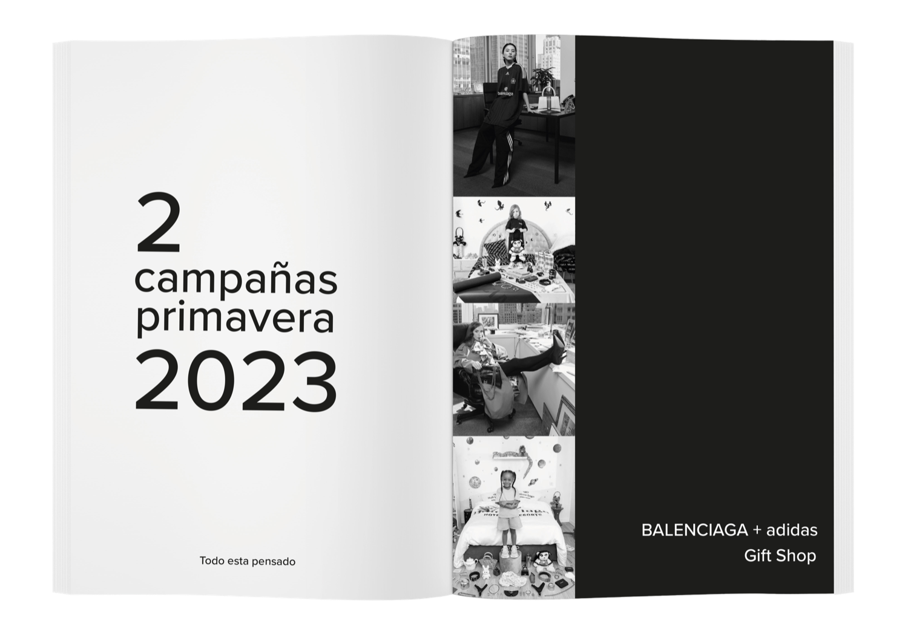
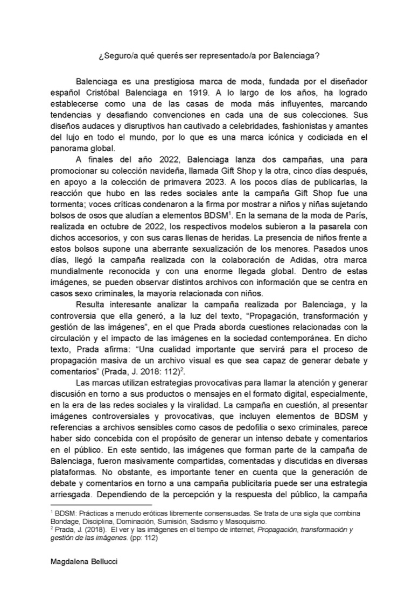
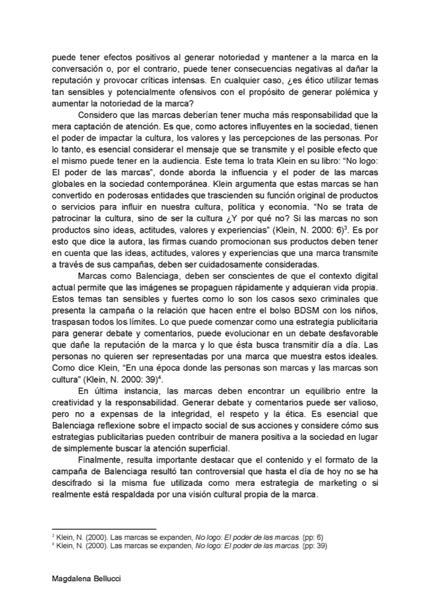

Balenciaga
Este fanzine surge como una pieza editorial de carácter reflexivo, pensada para comunicar un tema sensible desde una mirada crítica y conceptual. La consigna proponía elegir un tema trabajado en clase y vincularlo con lecturas teóricas. Decidí utilizar el formato fanzine como medio de expresión. En este caso, el diseño adopta una estética deliberadamente simple y contenida, evitando recursos decorativos excesivos para no distraer del mensaje central. La composición se apoya en el uso del blanco y negro, amplios espacios en blanco, tipografía clara y una jerarquía visual sobria, permitiendo que las imágenes y los silencios tengan tanto peso como el contenido escrito. Los textos explicativos se ubican en la parte inferior de las páginas, funcionando como anclajes conceptuales que acompañan la lectura sin imponer una interpretación cerrada. De esta manera, el fanzine prioriza la claridad, la tensión visual y la reflexión, utilizando el diseño como una herramienta de comunicación directa y respetuosa frente a un tema complejo, donde la forma no suaviza el contenido, sino que lo vuelve más evidente.
2 año - Estudios visuales